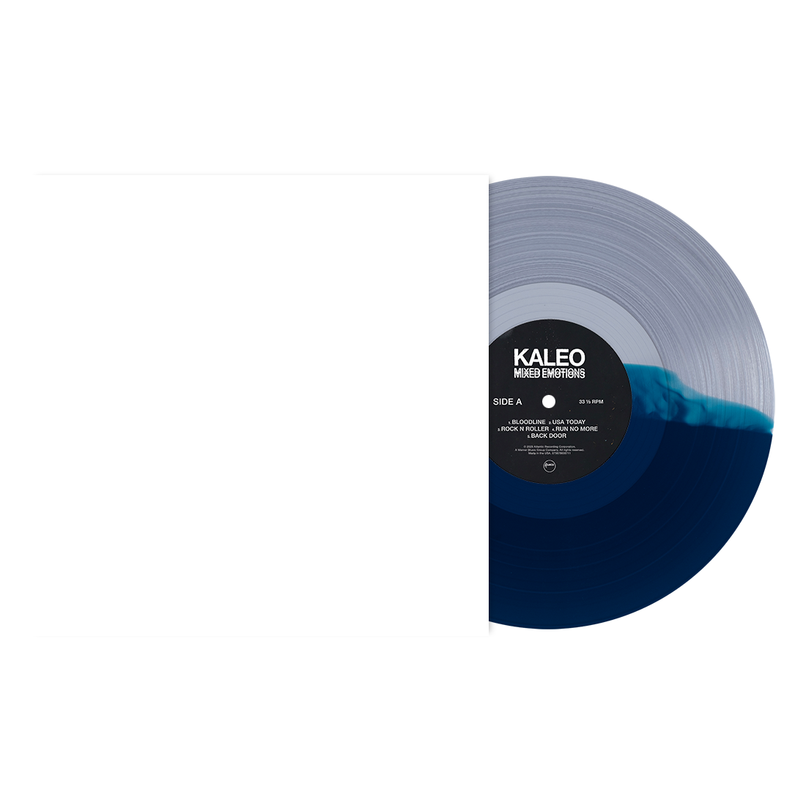
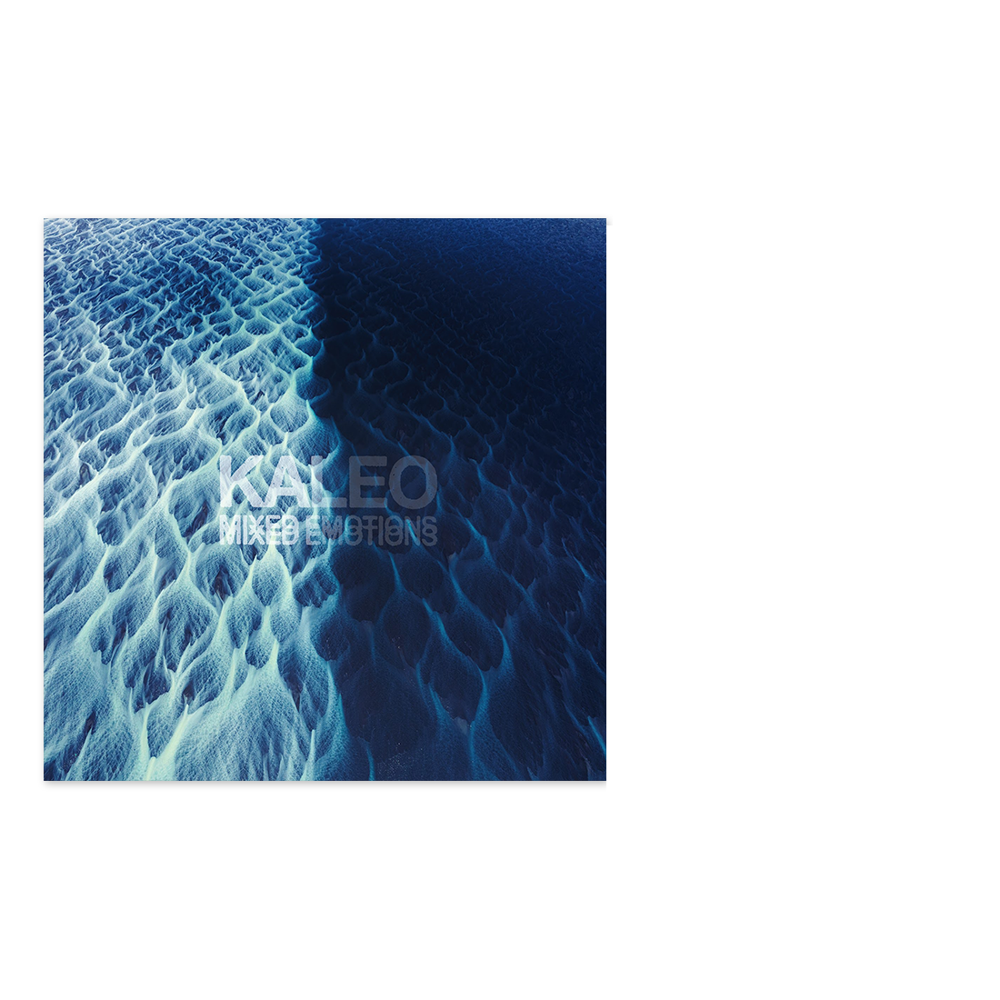
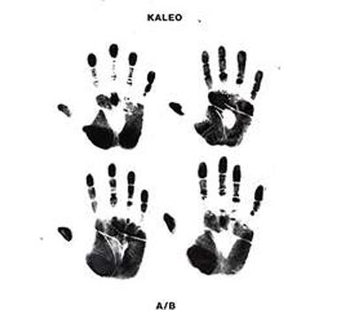
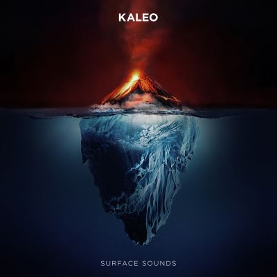

KALEO
Bloodline
USA Today
Rock N Roller
Run No More
Back Door
Lonely Cowboy
The Good Die Young
Legacy
Memoirs
Sofðu Unga Ástin Mín


Lonely Cowboy
Votre navigateur ne supporte pas la vidéo.
Autres Albums

